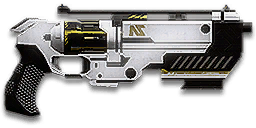

← Back to the NS-44 Commissioner comparison
Sage Guide · Nanite Systems · Pistol
The 1,000-cert Nanite Systems revolver — the hardest-hitting pistol on Auraxis, usable by every faction and every class except MAX. Three rounds to kill to the chest at any range you will actually fight at. This page teaches you to land them.
The one-line verdict: The finisher. 450 damage a round means a wounded enemy dies to one tap and a fresh one dies to three — if you can hit with a gun that kicks like a mule and holds six rounds.

The NS-44 Commissioner · Nanite Systems · 1,000 certs · 6-round cylinder
Picture the scene, because you've probably lived it: you're sprinting across a courtyard, an enemy appears, and you do everything at once — hold the trigger down while you're still running, then press aim-down-sights (ADS) a split-second later, finger still down. The sight picture snaps in, it looks precise… and your bullets spray everywhere except the man in your crosshair. He kills you. It feels like the game cheated. It didn't — here's what actually happened.
Four beats, left to right — the same mistake the cards above describe, drawn out.
1 · SprintingYour cone starts maxed at 7.0° — the widest it can ever be.
2 · Trigger heldFiring from the hip while running — every shot adds bloom.
3 · ADS, mid-holdThe sight looks precise — but aiming down sights does not reset bloom.
4 · The sprayBullets fly out of the wide cone you built. The enemy walks away.
Same fight, done right. Each beat has a job, and the order is the whole lesson.
1 · StopLet go of sprint (and the trigger). About 0.3 s for the gun to settle.
2 · AimPress ADS and let the sight come up (~0.15 s).
3 · FireNow fire — from the aimed cone. First shots land where the dot points.
The exception — under ~8 m, skip the whole danceHipfire works, no ADS needed, and stopping is optional. Keep moving, strafe, and let the hipfire ring do the work.
You started firing from a sprint, from the hip. Sprinting is the least accurate state in the game: your cone of fire starts at 7.0° — fully bloomed, the widest it can ever be. Every shot you fire from the hip widens it further still (+0.4° per shot).
Then you pressed ADS mid-hold — and nothing reset. Aiming down sights does not shrink a cone of fire that is already bloomed. The scope only gives you a precise picture; the bullets keep flying out of the wide cone you built while running and hipfiring. That's the whole mystery: accurate-looking aim, wildly inaccurate gun.
Two timers stack the deck further: your gun needs about 0.3 s to settle after a sprint, and raising the sight itself takes ~0.15 s. Trigger held through all of it means your first half-second of fire is pure confetti.
The Commissioner makes this worse in one specific way: every shot kicks the muzzle up 1.8° and blooms the hip cone by 0.4° — the widest per-shot bloom of any pistol on this page. A panicked three-shot spray from a sprint cone is three misses, and half your cylinder is gone.
1 · Feet. Let go of sprint (and the trigger, if you're already holding it). Stop, or drop into a strafe — anything but a full sprint.
2 · Sight. Press ADS and let the sight come up. This takes a heartbeat — that's fine, a quarter-second of patience is cheaper than a magazine of misses.
3 · Trigger. Now fire. Starting from the aimed cone of 0.2°, your first shots land where the dot points, and you control the bloom from zero instead of inheriting a maxed-out cone.
Stop → aim → fire. If you take one habit from this entire page, take this one. You'll practise exactly this rhythm in the simulator in section 04.
Commissioner note: your aimed cone is 0.20° — the tightest ADS cone of any pistol on this page except the Blackhand. The gun is brutally accurate when you let it be; the skill is giving it the half-second it needs.
Every enemy infantry has 1,000 health (500 shield + 500 health). Your bullet does 450 damage up close, fading to 225 at long range. Headshots count double, leg shots count less (×0.9). That gives you three numbers worth memorising:
| Range | Damage / bullet | Head | Chest | Legs | Chest vs shielded Heavy |
|---|---|---|---|---|---|
| Close · 0–10 m | 436.8 | 2 | 3 | 3 | 4 |
| Mid · 10–25 m | 337.5 | 2 | 3 | 4 | 5 |
| Far · 25–40 m+ | 238.2 | 3 | 5 | 5 | 7 |
Perfect-accuracy times to kill: 2 headshots ≈ 0.35 s, 3 chest shots ≈ 0.71 s at any range out to 25 m. In real fights you'll land maybe half your rounds — still, this is why the head matters so much on this gun. Note the 40 m row: damage has faded to 238, so the kill costs 5 chest shots and 1.41 s — the Commissioner stops being a three-tap gun past ~30 m.
One gun, different fighting styles by distance. The right technique changes with range — use the range finder below to see what your bullets do at any distance, then learn the bands underneath it.
How to fight here
Aim: centre of the chest, from the hip. Keep moving.
Scoping in costs you time and drops your speed to 0.75× — at arm's length that gets you killed. One round does 450 damage: a wounded enemy dies to a single hipfire tap. Strafe side to side (A/D) while firing so you're hard to track.
Aim: neck / upper chest. One click per shot.
This is where the gun earns its keep: full 450 damage to 8 m, still ~338 at 25 m, and three taps kill anyone. Start your crosshair at the neck — the heavy recoil climbs into the head for free damage. Strafe while scoped; at 0.75× you move faster aimed than a scoped Heavy, and a moving target still beats a still one.
Aim: chest. One tap, breathe, one tap.
Damage is sliding from ~338 toward 225 and your cone blooms 0.2° per aimed shot — a lot, on a six-round gun. Fire one tap, let the sight settle, fire again. The recoil kicks straight up (1.8°), so pull your mouse down firmly after every shot. Crouch or stand still when you can.
Your accuracy is decided by two things before skill even enters it: what your body is doing (your stance sets the starting cone of fire) and what your finger is doing (each shot grows that cone with every round). The Commissioner is semi-automatic only — one click, one round, no fire-mode switch — so "firing modes" are something you do with your finger, not a setting on the gun. And this gun punishes a busy finger more than any pistol on this page: hip bloom is 0.4° per shot, aimed bloom 0.2°.
| Stance | Starting cone | What it means for you |
|---|---|---|
| Sprinting | 7.0° | Maxed out — the widest the cone can be. Never start firing from a sprint. |
| Hipfire, moving | 1.8° | Walking or strafing from the hip. Your first 1 shot while moving stay at the standing cone; after that, bloom takes over. |
| Hipfire, standing | 1.2° | Your point-blank default. |
| Hipfire, crouched | 1.2° | Crouch when holding a doorway from the hip. |
| Aimed (ADS), feet planted | 0.2° | Standing or crouched makes little difference here. This is why section 01's order matters. |
| Aimed (ADS), strafing | 0.2° | The moving floor — the same as standing still, so strafing costs you nothing in cone size on this gun. You still move at 0.75× while scoped. Strafe between shots to stay hard to hit; plant your feet for each shot. |
| Mode | How your finger does it | Use it at |
|---|---|---|
| Tap-fire — the default | One click per shot, about 353 ms apart | Almost everything, 0–25 m. Each tap starts from a reset cone if you let it. |
| The double-tap | Two quick taps, then a real pause to re-aim | Finishing a wounded target — two rounds back-to-back, then check your aim before the third. |
| Slow aimed taps | Single clicks with a full pause between them | 25 m and out, at exposed or stationary targets. Slow, but every round goes where the dot is. |
A target 10 m away, aiming down sights. Click TAP TO FIRE once per shot and watch where the rounds land — that's firing from an ever-growing cone, drawn at true scale from this gun's numbers (170 RPM, 0.20° starting cone, 0.20° bloom per shot, target at 10 m). Clicks inside the 353 ms refire do nothing: the gun was not ready yet. Pause a full second and the cone resets. Even taps at the cadence are the whole skill.
Cone of fire — fills as you fire, empties when you pause.
Tap FIRE once per shot, at the refire cadence. The trainer grades your rhythm.
Some things are easier to show than to say. Here's what your bullets actually do: how wide hipfire spreads at 8 metres, what a good tap rhythm looks like, and what the fixed iron sights really show you. The hands-on version — tapping the trigger yourself — is the practice window in section 04.
A full-size target 8 m away. The rings show where hipfire rounds land around your aim point (the chest). Sizes are drawn to scale from the gun's real cone-of-fire numbers.
Read it this way: standing still, the 0.17 m ring fits well inside the chest — most rounds hit a target this size, which is why hipfire works point-blank on this gun. Move and it grows to 0.24 m — still inside the torso. The rings only grow with distance while the man doesn't, so past ~10 m they start leaking past him: the exact moment to switch to aiming down sights, where the spread shrinks to a 0.03 m dot. (Ring sizes use the real geometry: spread diameter = 2 × distance × tan(cone ÷ 2).)
A semi-automatic fires once per click, and no faster than its refire — one shot every 353 ms on this gun. Clicking faster does nothing; clicking slower hands the enemy time. Same 6 shots, two very different outcomes:
The target pattern is one even tap every 353 ms. Not faster — the gun cannot fire faster, and clicks inside the refire window do nothing. Not slower — every extra 100 ms of hesitation is a tenth of a second added to your kill time, and at 450 damage a round, you cannot afford to give it away. The trainer in section 04 grades exactly this: even taps at the refire cadence.
No optic slot — this is the sight picture you get, and the sight picture you keep. The front post covers a target's lower chest at 25 m, so hold the post on the upper chest and let the head sit just above it. There is nothing to buy that changes this view: the only accuracy purchase on this gun is the Laser Sight, and it works from the hip, not the sight.
This gun mounts exactly two attachments — a Laser Sight and a Darklight Flashlight, both on the rail. There is no optic slot, no barrel slot, no ammo slot and no extended magazine. That is the whole shop, and it costs 200 certs to own all of it. Buy in the order shown and stop whenever the gun feels right.
Hipfire accuracy improves by a third (33% tighter cone). Your standing hipfire ring at 8 m shrinks from 0.17 m to 0.12 m.
Good: indoor point-holds and stairwell fights where you hipfire inside 8 m — the only accuracy upgrade this gun has.
Bad: open bases — you give up nothing else for it, but the bonus only matters up close.
A torch whose beam reveals cloaked infiltrators. Toggle it with the attachment key (X by default).
Good: hunting a stalker infiltrator camping your capture point — sweep corners with it.
Bad: as your everyday rail — it gives zero accuracy help, and the beam advertises your position.
A pistol is a sidearm, not a kit. Each setup below is the pistol plus the primary it finishes for — the gun is the same in all four, the job changes.
0 certs · Day one
What 1,000 certs buys you. Genuinely good — learn the tap cadence on this before spending anything. Pairs with any primary: it finishes what your LMG, carbine or shotgun started.
100 certs · Recommended
The best value in this whole guide. One attachment, and your point-blank hipfire — the range where a finisher actually works — gets a third tighter. Your primary does the work; this ends the fight.
100 certs · Stalker hunter
Built to sweep a capture point for the stalker infiltrator camping it. No accuracy help at all — carry this when the hunt is the job, and swap back to the Laser for real fights.
200 certs · Everything
Own both and swap per job. 200 certs buys every attachment this gun can ever take — there is nothing else to spend on it, ever.
Headshots deal double damage. Don't aim at the head directly — aim at the neck and let the gun's upward climb carry the next shot into the skull. It's the single biggest damage upgrade you own, and it's free.
This gun fires once per click and no faster than its 353 ms refire. Clicks inside the refire window do nothing — they are wasted motion that shakes your aim. Even taps at the cadence are the whole skill; the simulator in section 04 grades exactly this.
Six rounds is two kills if you never miss — and one kill plus a reload if you do. Know how many you've fired. After three taps, ask yourself whether the next target is worth the remaining three or whether you should reload behind cover first.
Reloading takes 3.00 s — the longest reload of any pistol on this page. A dry cylinder at the wrong moment is a death sentence. Reload early and only in cover, because three seconds is a long time to stand in a doorway.
Walk with your crosshair at head height, pointed where an enemy's head will appear — a doorway edge, a corner, stairs. Most beginners lose fights in the half-second spent dragging the crosshair onto target. While firing, tap A/D to strafe: at 0.75× aimed speed you're faster than almost anyone scoped in against you, and a moving target is dramatically harder to headshot back.
Your standing hip cone is 1.25° — and the 0.17 m ring at 8 m fits inside his chest. Inside ~8 m, don't ADS at all: keep strafing and let the hipfire do the work. Past ~10 m the rings start leaking past him, and that's the exact moment to switch to the sight.
Every gun has a price. Here's where the NS-44 Commissioner pays — and the habit that covers each hole.
Three taps kill anyone out to 25 m. But the cylinder holds six: two kills if you never miss, one kill and a prayer if you do.
Play around it: Don't trade taps. Headshots close the gap entirely — 2 to kill at any range out to 25 m — and count your rounds after every kill.
Reloading takes 3.00 s — a full second longer than the Underboss, twice the Spiker's. A reload at the wrong moment is a death sentence.
Play around it: Reload early and only in cover (habit 4). Six rounds means you reload often — make each one count by choosing the moment.
Vertical 1.8° per shot with slow recovery (10/s) — the heaviest kick of any pistol on this page. The second tap of a fast double lands high if you don't pull down.
Play around it: Pull down firmly after every shot, and let the sight settle between taps at range. Short, deliberate taps never give the climb time to build.
Hip bloom 0.4° per shot, aimed 0.2° — the widest per-shot bloom of any pistol on this page. Three fast hipfire taps grow the cone from 1.25° to 2.45°.
Play around it: Slow down. One tap, let the cone settle, one tap. The gun's damage means you only need three hits — make them three aimed hits, not six hopeful ones.
Past 30 m damage has faded toward 225: 5 chest shots, 1.41 s, against a target who is shooting back with a rifle.
Play around it: Tap-fire at exposed targets only, and spend the rest of the time closing distance. You're a finisher — the doorway and the stairwell are your address.
Open the world map, travel to VR Training, and run these on the target dummies. Five minutes before a play session beats an hour of dying confused.
Aim at a wall 20 m away and fire six single taps without touching the mouse. Watch the holes climb straight up — that's your gun's fingerprint (1.8° a shot). Repeat, pulling down after every tap, until the group stays fist-sized.
Walk the dummy range keeping your crosshair glued to neck height the whole time, snapping to each new target without dipping to the floor or sky. Slow and clean first; speed comes on its own.
At 10–25 m, kill dummies with even taps at the 353 ms cadence — use the simulator in section 04 first, then do it live. If a tap goes wide, slow down. Goal: whole kills without a single wild round.
Pick a dummy, stand 5 m away, and circle it with A/D while hipfiring it down without stopping. This is your point-blank survival skill — the one that fires while your movement does the defending.
Fire exactly three rounds, step behind a pillar, reload, repeat. Train your hands to reload early and only in cover until it's automatic — in real fights you'll do it without thinking, which is the point. Remember: it takes 3.00 s.